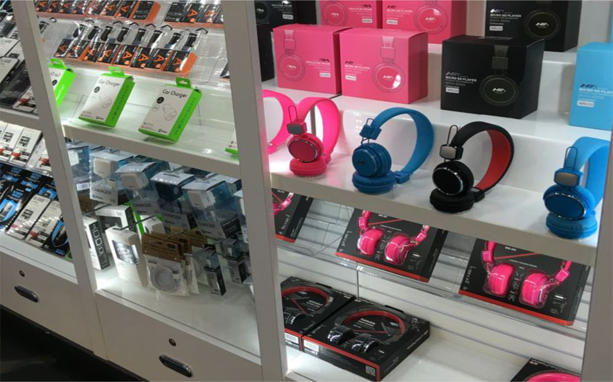

Five businesses you should never start with a loan
Admin | 20 july 2024 | BusinessShare this post
1. Restaurants
Restaurants are notorious for their high failure rates. Despite the romantic allure of owning a cozy bistro or a trendy cafe, the reality is that the food industry is fiercely competitive. Margins are thin, and success often depends on factors beyond your control, such as location, customer preferences, and economic conditions. The initial investment for equipment, decor, staff, and inventory is substantial, and it may take years to see a return. Funding such a risky venture with a loan could lead to financial distress if the restaurant doesn't take off quickly.

Photo credit | pinterest.com
2. Retail Stores
Traditional retail stores face significant challenges in the age of e-commerce. With giants like jumia and konga dominating the market, smaller retail stores struggle to compete on price, variety, and convenience. The overhead costs for rent, utilities, and staffing can be crippling, especially if patronage is low. Though such business can sometimes thrive, starting a retail store with a loan often come with pressure to generate immediate sales and revenue, which is not guaranteed in today's fluctuating retail landscape.
Photo credit | pinterest.com
3. Seasonal Businesses
Businesses that operate only during certain times of the year, such as holiday decoration shops, ice cream stands, or seasonal tourist attractions, are inherently risky. These businesses must generate enough revenue during their peak seasons to cover their costs for the entire year. If the season is less successful than anticipated, paying off a loan can become a significant burden. The unpredictability of consumer behavior and weather conditions can further complicate the financial stability of seasonal businesses.
Photo credit | pinterest.com
4. Tech Startups
While tech startups can be incredibly lucrative, they are also highly speculative. Many tech ventures require substantial upfront investment in research, development, and marketing before they generate any revenue. The market is also saturated with competition, making it difficult to stand out. If a tech startup doesn't achieve rapid growth and attract additional funding, it can quickly become unsustainable. Using a loan to finance a tech startup adds another layer of risk, as the business might not become profitable in time to meet loan repayment schedules.
Photo credit | pinterest.com
5. Artisanal and Craft Businesses
Businesses centered around handmade or artisanal products often operate on thin margins and depend heavily on local markets. While these businesses can thrive with a loyal customer base, scaling up to meet loan repayments can be challenging. Production costs for materials and the time-intensive nature of handcrafted items make it difficult to generate high profit margins. Additionally, these businesses often face fluctuations in demand and competition from mass-produced alternatives, which can impact their ability to maintain consistent revenue streams.
In a nutshell, While the drive of starting your own business is strong, it's essential to approach funding with caution. Loans can provide the necessary capital but also come with significant financial obligations. If the business fails to generate expected revenue, loan repayments can become a substantial burden, leading to potential financial distress. Careful consideration of the business model, market conditions, and inherent risks is crucial before deciding to fund a business with a loan. When in doubt, seek alternative funding methods such as personal savings, investor capital, or grants, which may offer more flexibility and less risk.
Share On social media
Read alsoHow to Identify and Capitalize on Market OpportunitiesRecent Post
Read More posts

Why Nigerians are poor
20 june 2024
Why Nigerians are poor
22 june 2024
Why Nigerians are poor
22 june 2024
Why Nigerians are poor
22 june 2024
Why Nigerians are poor
22 june 2024
Why Nigerians are poor
22 june 2024
Why Nigerians are poor
22 june 2024